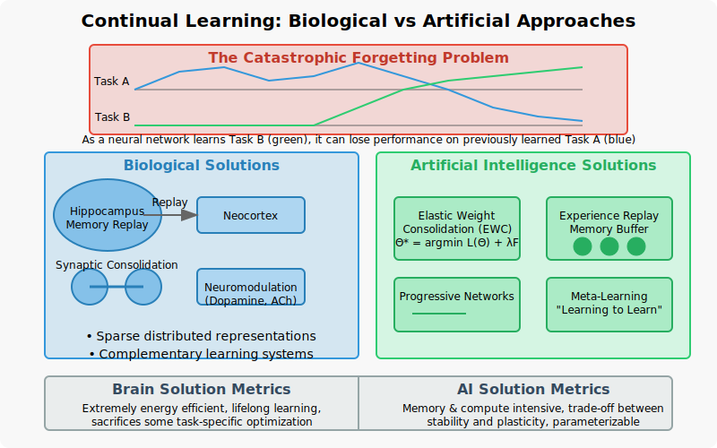
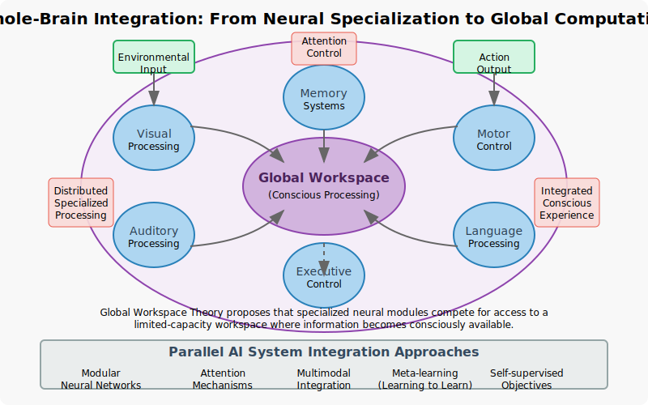

Chapter 16: Where Next for Neuro-AI?#
16.0 Chapter Goals#
Explore frontier research directions at the intersection of neuroscience and AI
Understand neuromorphic computing approaches and their advantages
Consider ethical implications of brain-inspired AI systems
Envision future developments in the field of neuro-AI
16.1 Neuromorphic Hardware#
Neuromorphic computing seeks to implement neural processing principles directly in hardware, offering potentially revolutionary advantages in energy efficiency and computational capability.
16.1.1 Spiking Neural Networks#
Traditional artificial neural networks use continuous activation values, but biological neurons communicate through discrete all-or-nothing action potentials (spikes). Spiking Neural Networks (SNNs) mimic this biological principle:
import numpy as np
from matplotlib import pyplot as plt
class SpikingNeuron:
def __init__(self, threshold=1.0, tau_m=10.0, tau_ref=2.0):
"""
Simple Leaky Integrate-and-Fire neuron model
Parameters:
- threshold: Membrane potential threshold for spike generation
- tau_m: Membrane time constant (ms)
- tau_ref: Refractory period (ms)
"""
self.threshold = threshold
self.tau_m = tau_m
self.tau_ref = tau_ref
# State variables
self.membrane_potential = 0.0
self.last_spike_time = -np.inf
self.t = 0 # Current time
def update(self, input_current, dt=1.0):
"""
Update neuron state and check for spike
Parameters:
- input_current: Input current to the neuron
- dt: Time step (ms)
Returns:
- 1 if neuron spikes, 0 otherwise
"""
self.t += dt
# Check if in refractory period
if self.t - self.last_spike_time <= self.tau_ref:
return 0
# Update membrane potential (leaky integration)
d_v = (-self.membrane_potential + input_current) / self.tau_m
self.membrane_potential += d_v * dt
# Check for spike
if self.membrane_potential >= self.threshold:
self.membrane_potential = 0.0 # Reset
self.last_spike_time = self.t
return 1
return 0
Unlike rate-based ANNs, SNNs encode information in the precise timing of spikes and can be more energy-efficient by only computing when spikes occur.
16.1.2 Resistive Computing and Memristors#
A key limitation in conventional computing is the energy cost of moving data between memory and processing units (the “von Neumann bottleneck”). In contrast, the brain co-locates memory and computation in synapses.
Memristors are resistive devices whose resistance changes based on the history of current flow through them. They can implement synaptic weights directly in hardware:
class Memristor:
def __init__(self, r_on=100, r_off=10000, initial_state=0.5):
"""
Simple memristor model
Parameters:
- r_on: Low resistance state (ohms)
- r_off: High resistance state (ohms)
- initial_state: Initial state variable (0-1)
"""
self.r_on = r_on
self.r_off = r_off
self.state = initial_state # Internal state variable (0-1)
def get_resistance(self):
"""Calculate current resistance based on internal state"""
return self.r_on + self.state * (self.r_off - self.r_on)
def update(self, voltage, dt=1e-6, learn_rate=1e-4):
"""
Update memristor state based on applied voltage
Parameters:
- voltage: Applied voltage
- dt: Time step
- learn_rate: Learning rate parameter
"""
# Simplified nonlinear update rule
if voltage > 0:
# Increase resistance (depression)
self.state = min(1.0, self.state + learn_rate * voltage * dt)
else:
# Decrease resistance (potentiation)
self.state = max(0.0, self.state + learn_rate * voltage * dt)
Memristor crossbar arrays can implement matrix multiplication operations directly in hardware with orders of magnitude less energy than digital implementations.
16.1.3 Event-Based Sensors#
Event-based sensors like Dynamic Vision Sensors (DVS) mimic the retina by only transmitting information when pixels detect changes in brightness:
def simulate_dvs_output(video_frames, threshold=0.1):
"""
Simulate output of a Dynamic Vision Sensor from video frames
Parameters:
- video_frames: Sequence of image frames (T, H, W)
- threshold: Change threshold for generating events
Returns:
- events: List of (x, y, t, polarity) tuples
"""
events = []
prev_frame = video_frames[0]
for t, frame in enumerate(video_frames[1:], 1):
# Calculate log intensity change
log_diff = np.log(frame + 1e-6) - np.log(prev_frame + 1e-6)
# Generate ON events (positive changes)
on_events = np.where(log_diff > threshold)
for y, x in zip(on_events[0], on_events[1]):
events.append((x, y, t, 1)) # x, y, time, polarity
# Generate OFF events (negative changes)
off_events = np.where(log_diff < -threshold)
for y, x in zip(off_events[0], off_events[1]):
events.append((x, y, t, -1)) # x, y, time, polarity
prev_frame = frame
return events
This event-based approach drastically reduces data transmission and power requirements, enabling high-speed vision processing with minimal energy.
16.1.4 Brain-Inspired Chips#
Several neuromorphic hardware platforms have demonstrated remarkable efficiency:
IBM TrueNorth: 1 million digital neurons with 256 million synapses, consuming only ~70mW of power.
Intel Loihi: Implements on-chip learning with ~130,000 neurons and 130 million synapses per chip.
SpiNNaker: Massively parallel architecture designed specifically for neural simulations.
These systems achieve energy efficiencies 100-1000× better than conventional architectures for certain tasks:
def compare_energy_efficiency():
"""
Compare energy efficiency for image recognition task
(based on published benchmarks)
"""
architectures = {
"GPU (NVIDIA V100)": {"joules_per_inference": 1.0, "accuracy": 0.76},
"CPU (Intel Xeon)": {"joules_per_inference": 5.0, "accuracy": 0.76},
"FPGA": {"joules_per_inference": 0.1, "accuracy": 0.75},
"Loihi": {"joules_per_inference": 0.001, "accuracy": 0.74},
"TrueNorth": {"joules_per_inference": 0.0001, "accuracy": 0.70}
}
# Calculate energy efficiency (accuracy per joule)
for arch, stats in architectures.items():
efficiency = stats["accuracy"] / stats["joules_per_inference"]
print(f"{arch}: {efficiency:.1f} accuracy/joule")
16.2 Continual Learning#
One of the major challenges in current AI systems is the “catastrophic forgetting” problem: when trained on new tasks, neural networks often lose performance on previously learned tasks. The brain, in contrast, can learn continually throughout life.

16.2.1 Catastrophic Forgetting Problem#
When an artificial neural network is trained sequentially on different tasks, learning new tasks can overwrite weights critical for previous tasks:
import torch
import torch.nn as nn
import torch.optim as optim
import matplotlib.pyplot as plt
def demonstrate_catastrophic_forgetting():
"""
Demonstrate catastrophic forgetting in a simple network
"""
# Simplified experiment
model = nn.Sequential(
nn.Linear(10, 50),
nn.ReLU(),
nn.Linear(50, 50),
nn.ReLU(),
nn.Linear(50, 2)
)
# Generate two synthetic tasks
task_A_data = torch.randn(1000, 10)
task_A_targets = (task_A_data[:, 0] > 0).float()
task_B_data = torch.randn(1000, 10)
task_B_targets = (task_B_data[:, 1] > 0).float()
# Training loop
optimizer = optim.SGD(model.parameters(), lr=0.01)
criterion = nn.BCEWithLogitsLoss()
task_A_accuracy = []
task_B_accuracy = []
# Initial training on task A
for epoch in range(100):
optimizer.zero_grad()
output = model(task_A_data)[:, 0]
loss = criterion(output, task_A_targets)
loss.backward()
optimizer.step()
# Evaluate
with torch.no_grad():
pred_A = (output > 0).float()
acc_A = (pred_A == task_A_targets).float().mean()
task_A_accuracy.append(acc_A.item())
output_B = model(task_B_data)[:, 1]
pred_B = (output_B > 0).float()
acc_B = (pred_B == task_B_targets).float().mean()
task_B_accuracy.append(acc_B.item())
# Switch to training on task B
for epoch in range(100):
optimizer.zero_grad()
output = model(task_B_data)[:, 1]
loss = criterion(output, task_B_targets)
loss.backward()
optimizer.step()
# Evaluate
with torch.no_grad():
pred_A = (model(task_A_data)[:, 0] > 0).float()
acc_A = (pred_A == task_A_targets).float().mean()
task_A_accuracy.append(acc_A.item())
pred_B = (output > 0).float()
acc_B = (pred_B == task_B_targets).float().mean()
task_B_accuracy.append(acc_B.item())
# Plot results
plt.figure(figsize=(10, 6))
plt.plot(task_A_accuracy, label='Task A Accuracy')
plt.plot(task_B_accuracy, label='Task B Accuracy')
plt.axvline(x=100, color='r', linestyle='--', label='Switch to Task B')
plt.xlabel('Training Steps')
plt.ylabel('Accuracy')
plt.legend()
plt.title('Catastrophic Forgetting Demonstration')
plt.ylim(0, 1)
return plt
16.2.2 Biological Solutions to Stability-Plasticity#
The brain employs several mechanisms to balance stability (retaining old memories) and plasticity (forming new ones):
Complementary Learning Systems Theory: The hippocampus rapidly learns new experiences, while the neocortex gradually integrates knowledge through replay and consolidation.
Synaptic Consolidation: Synapses important for existing memories become less plastic and more stable over time.
Neuromodulatory Systems: Dopamine, acetylcholine, and other neuromodulators regulate learning rates based on novelty and importance.
class ComplementaryLearningSystems:
def __init__(self, fast_learn_rate=0.1, slow_learn_rate=0.01, consolidation_strength=0.5):
self.hippocampus = [] # Fast-learning episodic memory
self.neocortex = {} # Slow-learning semantic memory
self.fast_learn_rate = fast_learn_rate
self.slow_learn_rate = slow_learn_rate
self.consolidation_strength = consolidation_strength
def learn(self, experience):
"""Learn a new experience"""
# First, store in hippocampus (fast learning)
self.hippocampus.append(experience)
# Then, slowly integrate into neocortex
if experience["concept"] in self.neocortex:
# Update existing knowledge
current = self.neocortex[experience["concept"]]
self.neocortex[experience["concept"]] = {
"features": current["features"] * (1 - self.slow_learn_rate) +
experience["features"] * self.slow_learn_rate,
"importance": current["importance"] + self.consolidation_strength
}
else:
# Create new knowledge
self.neocortex[experience["concept"]] = {
"features": experience["features"],
"importance": 1.0
}
def consolidate(self, replay_count=5):
"""Consolidate memories from hippocampus to neocortex"""
# Simulate memory replay during sleep
for _ in range(replay_count):
if self.hippocampus:
# Replay random experiences from hippocampus
replay_idx = np.random.randint(0, len(self.hippocampus))
replay_experience = self.hippocampus[replay_idx]
# Strengthen in neocortex
concept = replay_experience["concept"]
if concept in self.neocortex:
self.neocortex[concept]["importance"] += self.consolidation_strength
16.2.3 Replay and Consolidation Mechanisms#
In both brains and artificial systems, replay of previous experiences helps consolidate memories:
class ExperienceReplayBuffer:
def __init__(self, capacity=10000):
"""
Experience replay buffer for continual learning
Parameters:
- capacity: Maximum number of experiences to store
"""
self.buffer = []
self.capacity = capacity
self.position = 0
def add(self, experience):
"""Add an experience to the buffer"""
if len(self.buffer) < self.capacity:
self.buffer.append(None)
self.buffer[self.position] = experience
self.position = (self.position + 1) % self.capacity
def sample(self, batch_size):
"""Sample a batch of experiences randomly"""
indices = np.random.choice(len(self.buffer), batch_size, replace=False)
return [self.buffer[i] for i in indices]
def is_empty(self):
"""Check if buffer is empty"""
return len(self.buffer) == 0
16.2.4 Meta-Learning Approaches#
Meta-learning, or “learning to learn,” aims to develop algorithms that improve their learning ability over time:
class MetaContinualLearner:
def __init__(self, model, meta_lr=0.001):
"""
Meta-learning approach for continual learning
Parameters:
- model: Base model to train
- meta_lr: Meta-learning rate
"""
self.model = model
self.meta_optimizer = optim.Adam(model.parameters(), lr=meta_lr)
self.task_optimizers = {}
self.task_losses = {}
def learn_task(self, task_id, data, targets, epochs=10, lr=0.01):
"""Learn a specific task"""
# Create optimizer for this task if it doesn't exist
if task_id not in self.task_optimizers:
self.task_optimizers[task_id] = optim.SGD(self.model.parameters(), lr=lr)
self.task_losses[task_id] = nn.MSELoss()
optimizer = self.task_optimizers[task_id]
criterion = self.task_losses[task_id]
# Save initial weights
initial_weights = {name: param.clone() for name, param in self.model.named_parameters()}
# First, compute gradients on the current task
optimizer.zero_grad()
outputs = self.model(data)
loss = criterion(outputs, targets)
loss.backward()
optimizer.step()
# Meta-update: consider performance on all previous tasks
self.meta_optimizer.zero_grad()
meta_loss = 0
for prev_task_id, prev_optimizer in self.task_optimizers.items():
if prev_task_id != task_id:
# Sample data from previous task (simplified)
prev_data = self.get_task_sample(prev_task_id)
prev_targets = self.get_task_targets(prev_task_id)
# Evaluate on previous task
prev_outputs = self.model(prev_data)
prev_loss = self.task_losses[prev_task_id](prev_outputs, prev_targets)
meta_loss += prev_loss
# Include current task loss
meta_loss += loss
# Update model using meta-loss
meta_loss.backward()
self.meta_optimizer.step()
def get_task_sample(self, task_id):
"""Get a sample from a task (placeholder)"""
# In a real implementation, this would retrieve stored examples
return torch.randn(10, 10)
def get_task_targets(self, task_id):
"""Get targets for a task sample (placeholder)"""
# In a real implementation, this would retrieve stored targets
return torch.randn(10, 2)
16.3 AI for Neuroscience#
While neuroscience has heavily inspired AI, AI is now increasingly being used to advance neuroscience.
16.3.1 Neural Data Analysis with Deep Learning#
Deep learning is transforming how we analyze complex neural data:
def analyze_neural_recordings(spike_data, behavior_data):
"""
Use deep learning to analyze neural recording data
Parameters:
- spike_data: Neural spike recordings [neurons, time]
- behavior_data: Behavioral measurements [time, features]
Returns:
- model: Trained neural decoder
"""
# Prepare data
X = spike_data.T # [time, neurons]
y = behavior_data # [time, features]
# Split into train/test
split_idx = int(0.8 * len(X))
X_train, X_test = X[:split_idx], X[split_idx:]
y_train, y_test = y[:split_idx], y[split_idx:]
# Create and train a neural decoder
model = nn.Sequential(
nn.Linear(X.shape[1], 128),
nn.ReLU(),
nn.Dropout(0.5),
nn.Linear(128, 64),
nn.ReLU(),
nn.Linear(64, y.shape[1])
)
# Train the model
optimizer = optim.Adam(model.parameters(), lr=0.001)
criterion = nn.MSELoss()
for epoch in range(100):
optimizer.zero_grad()
outputs = model(torch.tensor(X_train, dtype=torch.float32))
loss = criterion(outputs, torch.tensor(y_train, dtype=torch.float32))
loss.backward()
optimizer.step()
# Evaluate
with torch.no_grad():
y_pred = model(torch.tensor(X_test, dtype=torch.float32)).numpy()
r2_scores = [np.corrcoef(y_test[:, i], y_pred[:, i])[0, 1]**2
for i in range(y_test.shape[1])]
print(f"Average R² score: {np.mean(r2_scores):.3f}")
return model
These techniques have enabled breakthroughs in understanding neural dynamics and brain-behavior relationships.
16.3.2 Brain Simulation Efforts#
Large-scale brain simulations aim to reproduce neural dynamics in silico:
class BrainRegionSimulation:
def __init__(self, n_neurons=1000, connectivity_density=0.1):
"""
Simplified brain region simulation
Parameters:
- n_neurons: Number of neurons to simulate
- connectivity_density: Fraction of possible connections to create
"""
self.n_neurons = n_neurons
# Initialize neurons (simplified LIF model)
self.v_rest = -70.0 # resting potential (mV)
self.v_threshold = -55.0 # spike threshold (mV)
self.v_reset = -75.0 # reset potential (mV)
self.tau = 20.0 # membrane time constant (ms)
# State variables
self.v = np.ones(n_neurons) * self.v_rest # membrane potentials
self.refractory_time = np.zeros(n_neurons) # time until end of refractory period
# Generate random connectivity matrix
p = connectivity_density
self.weights = np.random.choice(
[0, 1], size=(n_neurons, n_neurons), p=[1-p, p]
)
# Scale weights and ensure no self-connections
self.weights = self.weights * np.random.normal(0, 0.1, (n_neurons, n_neurons))
np.fill_diagonal(self.weights, 0)
# 80% excitatory, 20% inhibitory
inh_neurons = np.random.choice(n_neurons, size=int(0.2 * n_neurons), replace=False)
self.weights[inh_neurons] *= -5
# Record spikes
self.spike_times = [[] for _ in range(n_neurons)]
self.current_time = 0
def step(self, external_input=None, dt=0.1):
"""
Simulate one time step
Parameters:
- external_input: External current to each neuron
- dt: Time step (ms)
Returns:
- spikes: Boolean array indicating which neurons spiked
"""
self.current_time += dt
# Default to no external input
if external_input is None:
external_input = np.zeros(self.n_neurons)
# Update membrane potentials
non_refractory = self.refractory_time <= 0
# Decay potential toward rest
self.v[non_refractory] += dt * (-(self.v[non_refractory] - self.v_rest) +
external_input[non_refractory]) / self.tau
# Check for spikes
spiked = (self.v >= self.v_threshold)
# Record spikes
for i in np.where(spiked)[0]:
self.spike_times[i].append(self.current_time)
# Reset membrane potential and set refractory period for spiked neurons
self.v[spiked] = self.v_reset
self.refractory_time[spiked] = 2.0 # 2ms refractory period
# Decrement refractory time
self.refractory_time -= dt
# Add synaptic inputs from spiking neurons
synaptic_input = np.dot(self.weights, spiked.astype(float))
self.v[non_refractory] += synaptic_input[non_refractory]
return spiked
def run(self, duration, input_fn=None):
"""
Run simulation for specified duration
Parameters:
- duration: Simulation duration (ms)
- input_fn: Function that returns external input at each time step
Returns:
- spike_times: List of spike times for each neuron
"""
steps = int(duration / 0.1) # Assuming dt=0.1
for step in range(steps):
t = step * 0.1
# Get external input if provided
external_input = None
if input_fn is not None:
external_input = input_fn(t)
self.step(external_input)
return self.spike_times
Projects like the Blue Brain Project aim to create increasingly detailed simulations that can generate testable hypotheses about brain function.
16.3.3 Connectome Reconstruction#
Mapping the brain’s wiring diagram (connectome) is being accelerated by AI:
def segment_neural_images(electron_microscopy_images):
"""
Segment neurons in electron microscopy images using deep learning
Parameters:
- electron_microscopy_images: 3D stack of EM images
Returns:
- segmentation: 3D segmentation map
"""
# Create a 3D U-Net model for segmentation
model = UNet3D(in_channels=1, out_channels=3) # 3 output channels: background, membrane, cell interior
# Process image stack in 3D patches
patch_size = (64, 64, 64)
segmentation = np.zeros_like(electron_microscopy_images)
# Simplified inference (in practice, would need proper patch handling)
for z in range(0, electron_microscopy_images.shape[0], patch_size[0]//2):
for y in range(0, electron_microscopy_images.shape[1], patch_size[1]//2):
for x in range(0, electron_microscopy_images.shape[2], patch_size[2]//2):
# Extract patch
z_end = min(z + patch_size[0], electron_microscopy_images.shape[0])
y_end = min(y + patch_size[1], electron_microscopy_images.shape[1])
x_end = min(x + patch_size[2], electron_microscopy_images.shape[2])
patch = electron_microscopy_images[z:z_end, y:y_end, x:x_end]
# Zero-pad if necessary
if patch.shape != patch_size:
padded = np.zeros(patch_size)
padded[:patch.shape[0], :patch.shape[1], :patch.shape[2]] = patch
patch = padded
# Predict segmentation
with torch.no_grad():
input_tensor = torch.tensor(patch, dtype=torch.float32).unsqueeze(0).unsqueeze(0)
prediction = model(input_tensor).argmax(dim=1).squeeze().numpy()
# Update segmentation (handle overlap with averaging)
segmentation[z:z_end, y:y_end, x:x_end] = prediction[:z_end-z, :y_end-y, :x_end-x]
# Post-process to get instance segmentation (simplified)
from skimage.measure import label
instance_seg = label(segmentation == 2) # Assuming channel 2 is cell interior
return instance_seg
# Placeholder for 3D UNet
class UNet3D(nn.Module):
def __init__(self, in_channels, out_channels):
super().__init__()
# Simplified placeholder for the model architecture
self.encoder = nn.Conv3d(in_channels, 16, kernel_size=3, padding=1)
self.decoder = nn.Conv3d(16, out_channels, kernel_size=3, padding=1)
def forward(self, x):
# Simplified forward pass
x = torch.relu(self.encoder(x))
x = self.decoder(x)
return x
16.3.4 Theory Development through Modeling#
Computational models help bridge the gap between neural mechanisms and cognitive function:
class BayesianInferenceBrain:
def __init__(self, sensory_noise=0.1, prior_mean=0, prior_var=1.0):
"""
Model of Bayesian inference in the brain
Parameters:
- sensory_noise: Standard deviation of sensory noise
- prior_mean: Prior belief about the mean of the variable
- prior_var: Prior belief about the variance of the variable
"""
self.sensory_noise = sensory_noise
self.prior_mean = prior_mean
self.prior_var = prior_var
# Current belief
self.belief_mean = prior_mean
self.belief_var = prior_var
def update_belief(self, observation):
"""
Update beliefs using Bayes' rule
Parameters:
- observation: New sensory observation
Returns:
- posterior_mean: Updated belief mean
- posterior_var: Updated belief variance
"""
# Compute precision (inverse variance)
prior_precision = 1.0 / self.belief_var
obs_precision = 1.0 / (self.sensory_noise ** 2)
# Bayesian update (for Gaussian variables)
posterior_precision = prior_precision + obs_precision
posterior_var = 1.0 / posterior_precision
posterior_mean = posterior_var * (
prior_precision * self.belief_mean +
obs_precision * observation
)
# Update beliefs
self.belief_mean = posterior_mean
self.belief_var = posterior_var
return posterior_mean, posterior_var
def predict_observation(self, n_samples=1000):
"""
Generate predicted observations based on current belief
Parameters:
- n_samples: Number of samples to generate
Returns:
- samples: Predicted observations
"""
# Sample from current belief
samples = np.random.normal(self.belief_mean, np.sqrt(self.belief_var), n_samples)
# Add sensory noise
samples += np.random.normal(0, self.sensory_noise, n_samples)
return samples
16.4 Whole-Brain Integration#
Understanding how specialized neural systems interact to produce integrated cognition is a key challenge for both neuroscience and AI.

16.4.1 Combining Specialized Neural Systems#
The brain integrates information across specialized areas, a challenge for current AI systems:
class IntegratedCognitiveArchitecture:
def __init__(self):
"""
Architecture combining specialized neural systems
"""
# Specialized modules
self.visual_system = ConvolutionalNetwork(input_shape=(3, 224, 224), output_dim=256)
self.language_system = TransformerNetwork(vocab_size=50000, embedding_dim=256)
self.memory_system = EpisodicMemoryStore(embedding_dim=256, capacity=1000)
self.motor_system = MotorController(control_dims=10, embedding_dim=256)
# Integration module (global workspace)
self.workspace = GlobalWorkspace(input_dim=256, hidden_dim=512)
# Attention control
self.attention = AttentionController(n_sources=4)
def process(self, visual_input=None, language_input=None, memory_query=None, motor_command=None):
"""
Process inputs through the integrated architecture
Returns:
- outputs: Dictionary of outputs from various systems
"""
module_outputs = {}
# Process inputs through specialized systems
if visual_input is not None:
module_outputs['visual'] = self.visual_system(visual_input)
if language_input is not None:
module_outputs['language'] = self.language_system(language_input)
if memory_query is not None:
module_outputs['memory'] = self.memory_system.retrieve(memory_query)
# Determine attention allocation
attention_weights = self.attention(list(module_outputs.values()))
# Integrate in global workspace
integrated_representation = self.workspace(module_outputs, attention_weights)
# Update memory with integrated representation
self.memory_system.store(integrated_representation)
# Generate motor commands if requested
motor_output = None
if motor_command is not None:
motor_output = self.motor_system(integrated_representation)
return {
'integrated': integrated_representation,
'motor': motor_output,
'attention': attention_weights
}
# Placeholder specialized module classes
class ConvolutionalNetwork(nn.Module):
def __init__(self, input_shape, output_dim):
super().__init__()
# Simplified visual processing network
def forward(self, x):
return torch.randn(1, 256) # Placeholder
class TransformerNetwork(nn.Module):
def __init__(self, vocab_size, embedding_dim):
super().__init__()
# Simplified language model
def forward(self, x):
return torch.randn(1, 256) # Placeholder
class EpisodicMemoryStore:
def __init__(self, embedding_dim, capacity):
self.memory = []
self.capacity = capacity
def store(self, embedding):
if len(self.memory) >= self.capacity:
self.memory.pop(0)
self.memory.append(embedding)
def retrieve(self, query):
# Simplified memory retrieval
return torch.randn(1, 256) # Placeholder
class MotorController(nn.Module):
def __init__(self, control_dims, embedding_dim):
super().__init__()
# Simplified motor controller
def forward(self, x):
return torch.randn(1, 10) # Placeholder
class GlobalWorkspace(nn.Module):
def __init__(self, input_dim, hidden_dim):
super().__init__()
# Simplified global workspace
def forward(self, module_outputs, attention_weights):
return torch.randn(1, 256) # Placeholder
class AttentionController:
def __init__(self, n_sources):
# Simplified attention controller
pass
def __call__(self, features):
# Return random attention weights
return [0.25, 0.25, 0.25, 0.25] # Placeholder
16.4.2 Global Workspace Theory#
Global Workspace Theory (GWT) proposes that specialized neural modules compete for access to a central “workspace” where information becomes consciously available:
def simulate_global_workspace(input_stimuli, specialized_modules, workspace_capacity=3):
"""
Simulate global workspace dynamics with competing modules
Parameters:
- input_stimuli: Dictionary of inputs to each module
- specialized_modules: Dictionary of processing modules
- workspace_capacity: Maximum number of modules that can access workspace
Returns:
- consciousness: Contents of global workspace
- access_history: Which modules accessed consciousness over time
"""
n_timesteps = 20
access_history = []
consciousness = None
for t in range(n_timesteps):
# Process inputs in specialized modules
module_outputs = {}
module_activations = {}
for name, module in specialized_modules.items():
if name in input_stimuli:
# Process input
output = module.process(input_stimuli[name])
module_outputs[name] = output
# Calculate activation (salience or importance)
module_activations[name] = module.calculate_activation(output)
# Determine which modules access the workspace
# Sort by activation and take top k (winner-take-all competition)
sorted_modules = sorted(module_activations.items(), key=lambda x: x[1], reverse=True)
winners = [name for name, _ in sorted_modules[:workspace_capacity]]
# Update workspace contents (simplified)
consciousness = {name: module_outputs[name] for name in winners}
# Log which modules accessed consciousness
access_history.append(winners)
# Update module states based on workspace contents
for name, module in specialized_modules.items():
module.update_state(consciousness)
# Update inputs based on current state (e.g., attention shifts)
# This would depend on the specific task being simulated
return consciousness, access_history
16.4.3 Attention and Conscious Processing#
Attention mechanisms determine what information enters conscious awareness:
class AttentionalBottleneck:
def __init__(self, n_channels=4, capacity=1):
"""
Model of attentional bottleneck in consciousness
Parameters:
- n_channels: Number of input channels
- capacity: Number of channels that can be attended simultaneously
"""
self.n_channels = n_channels
self.capacity = capacity
self.salience = np.zeros(n_channels)
self.attended = np.zeros(n_channels, dtype=bool)
def compute_salience(self, inputs):
"""
Compute salience of each input channel
Parameters:
- inputs: List of inputs to each channel
"""
# In a real model, salience would depend on input features
# Here we use a simplified random approach
self.salience = np.array([np.random.rand() * (0.5 + 0.5 * len(str(inp)))
for inp in inputs])
# Add noise
self.salience += np.random.normal(0, 0.1, self.n_channels)
def select_attended(self):
"""
Select which channels are attended based on salience
"""
# Select top k channels by salience
top_indices = np.argsort(self.salience)[-self.capacity:]
self.attended = np.zeros(self.n_channels, dtype=bool)
self.attended[top_indices] = True
def process(self, inputs):
"""
Process inputs through the attentional bottleneck
Parameters:
- inputs: List of inputs to each channel
Returns:
- conscious_contents: Contents that reach consciousness
"""
if len(inputs) != self.n_channels:
raise ValueError(f"Expected {self.n_channels} inputs, got {len(inputs)}")
# Compute salience for each input channel
self.compute_salience(inputs)
# Select attended channels
self.select_attended()
# Only attended channels reach consciousness
conscious_contents = [inp if att else None for inp, att in zip(inputs, self.attended)]
return conscious_contents
16.4.4 Metacognition and Introspection#
Metacognition—thinking about thinking—is a distinctive feature of human cognition:
class MetacognitiveModel:
def __init__(self, base_model, confidence_threshold=0.7):
"""
Model with metacognitive capabilities
Parameters:
- base_model: The underlying cognitive model
- confidence_threshold: Threshold for confidence-based decisions
"""
self.base_model = base_model
self.confidence_threshold = confidence_threshold
self.performance_history = []
self.confidence_history = []
def predict(self, input_data, allow_defer=True):
"""
Make a prediction with metacognitive monitoring
Parameters:
- input_data: Input for the base model
- allow_defer: Whether to allow deferring the decision
Returns:
- prediction: Model's prediction
- confidence: Confidence in the prediction
- deferred: Whether the decision was deferred
"""
# Get base model prediction
prediction = self.base_model.predict(input_data)
# Estimate confidence (in a real model, this would be based on model internals)
confidence = self.estimate_confidence(input_data, prediction)
# Decision to defer based on confidence
deferred = False
if allow_defer and confidence < self.confidence_threshold:
deferred = True
# Record for metacognitive learning
self.confidence_history.append(confidence)
return prediction, confidence, deferred
def estimate_confidence(self, input_data, prediction):
"""
Estimate confidence in a prediction
Parameters:
- input_data: Input data
- prediction: Model's prediction
Returns:
- confidence: Estimated confidence (0-1)
"""
# In a real model, confidence would be computed from model internals
# For simplicity, we use a placeholder
# For example, in a classification model:
# confidence = softmax_outputs[predicted_class]
confidence = np.random.beta(2, 2) # Placeholder
return confidence
def update_metacognition(self, ground_truth):
"""
Update metacognitive model based on actual performance
Parameters:
- ground_truth: True answer for the last prediction
"""
last_prediction = self.base_model.last_prediction
last_confidence = self.confidence_history[-1]
# Check if prediction was correct
correct = (last_prediction == ground_truth)
# Record performance
self.performance_history.append(correct)
# Adjust confidence threshold based on performance
# Increase threshold if overconfident in wrong answers
# Decrease threshold if underconfident in right answers
if not correct and last_confidence > 0.8:
# Overconfident error
self.confidence_threshold += 0.01
elif correct and last_confidence < 0.6:
# Underconfident correct answer
self.confidence_threshold -= 0.01
# Keep threshold in reasonable range
self.confidence_threshold = min(max(self.confidence_threshold, 0.5), 0.95)
def calibration_error(self):
"""
Calculate calibration error of confidence estimates
Returns:
- error: Mean squared error between confidence and accuracy
"""
if len(self.performance_history) == 0:
return 0
# Convert boolean performance to 0/1
performance = np.array(self.performance_history, dtype=float)
confidence = np.array(self.confidence_history)
# Calculate mean squared error
error = np.mean((confidence - performance) ** 2)
return error
16.5 Ethical Considerations#
As brain-inspired AI systems advance, ethical considerations become increasingly important.
16.5.1 Neural Privacy and Brain-Computer Interfaces#
Brain-computer interfaces (BCIs) raise important privacy considerations:
class NeuralPrivacyFramework:
def __init__(self):
"""
Framework for neural data privacy protection
"""
self.consent_levels = {
"identifiable": False, # Share personally identifiable neural data
"pseudonymized": False, # Share with personally identifying info removed
"aggregate_only": True, # Share only data aggregated across individuals
"model_only": True, # Share only models trained on data, not data itself
"no_sharing": False # No sharing of any kind
}
self.data_types = {
"motor": {"sensitivity": "low", "sharing_allowed": True},
"emotion": {"sensitivity": "high", "sharing_allowed": False},
"thoughts": {"sensitivity": "very_high", "sharing_allowed": False},
"personal_memories": {"sensitivity": "very_high", "sharing_allowed": False}
}
self.authorized_purposes = {
"medical_treatment": True,
"basic_research": True,
"commercial_development": False,
"advertising": False,
"law_enforcement": False
}
def check_access_permitted(self, data_type, purpose, sharing_level):
"""
Check if data access is permitted under the framework
Parameters:
- data_type: Type of neural data
- purpose: Purpose of data use
- sharing_level: Level of data sharing
Returns:
- permitted: Whether access is permitted
- reason: Reason for decision
"""
if data_type not in self.data_types:
return False, f"Unknown data type: {data_type}"
if purpose not in self.authorized_purposes:
return False, f"Unknown purpose: {purpose}"
if sharing_level not in self.consent_levels:
return False, f"Unknown sharing level: {sharing_level}"
# Check if data type can be shared at all
if not self.data_types[data_type]["sharing_allowed"]:
return False, f"{data_type} data cannot be shared due to sensitivity"
# Check if purpose is authorized
if not self.authorized_purposes[purpose]:
return False, f"Purpose '{purpose}' is not authorized"
# Check if sharing level is consented to
if not self.consent_levels[sharing_level]:
return False, f"No consent for sharing level: {sharing_level}"
# Special cases
if data_type in ["thoughts", "personal_memories"] and sharing_level in ["identifiable", "pseudonymized"]:
return False, f"Higher-level anonymization required for {data_type}"
# Access permitted
return True, "Access permitted under framework"
def differential_privacy_transform(self, neural_data, epsilon=0.1):
"""
Apply differential privacy to neural data
Parameters:
- neural_data: Raw neural data
- epsilon: Privacy parameter (lower = more privacy)
Returns:
- private_data: Privacy-protected version of the data
"""
# Simplified implementation of differential privacy
# Add calibrated noise to guarantee differential privacy
sensitivity = 1.0 # Maximum change one person can have on output
scale = sensitivity / epsilon
# Add Laplace noise to each value
noise = np.random.laplace(0, scale, size=neural_data.shape)
private_data = neural_data + noise
return private_data
16.5.2 Implications of Brain-like AI#
As AI systems become more brain-like, ethical questions about consciousness and rights may arise:
def analyze_ai_consciousness_criteria(system_properties):
"""
Analyze an AI system against criteria for consciousness
Parameters:
- system_properties: Dictionary of properties and their values
Returns:
- evaluation: Assessment against consciousness criteria
"""
# Proposed criteria for consciousness (philosophical framework)
criteria = {
"integration": {
"description": "Information integration across subsystems",
"measurement": "φ (phi) from Integrated Information Theory",
"threshold": 0.3,
"weight": 0.2
},
"reportability": {
"description": "Ability to report on internal states",
"measurement": "Accuracy of self-monitoring",
"threshold": 0.7,
"weight": 0.15
},
"self_model": {
"description": "Representation of self as distinct from environment",
"measurement": "Internal model calibration score",
"threshold": 0.6,
"weight": 0.2
},
"intentionality": {
"description": "States are about something (have content)",
"measurement": "Semantic coherence of internal states",
"threshold": 0.5,
"weight": 0.15
},
"adaptation": {
"description": "Flexible response to novel situations",
"measurement": "Performance on out-of-distribution tasks",
"threshold": 0.4,
"weight": 0.1
},
"temporality": {
"description": "Temporal integration of experience",
"measurement": "Memory coherence score",
"threshold": 0.5,
"weight": 0.1
},
"qualia": {
"description": "Subjective experience (hardest to measure)",
"measurement": "Behavioral indicators of experience",
"threshold": 0.3,
"weight": 0.1
}
}
# Evaluate system against criteria
evaluation = {}
total_score = 0
max_score = 0
for criterion, details in criteria.items():
if criterion in system_properties:
value = system_properties[criterion]
# Calculate score (0-1)
meets_threshold = value >= details["threshold"]
score = value * details["weight"]
evaluation[criterion] = {
"value": value,
"meets_threshold": meets_threshold,
"weighted_score": score,
"details": details
}
total_score += score
else:
evaluation[criterion] = {
"value": None,
"meets_threshold": False,
"weighted_score": 0,
"details": details
}
max_score += details["weight"]
# Overall assessment
evaluation["overall"] = {
"total_score": total_score,
"max_possible": max_score,
"percentage": total_score / max_score * 100,
"summary": "This framework does not claim to definitively determine consciousness, "
"but provides a structured approach to evaluating systems against proposed criteria."
}
return evaluation
16.5.3 Neuroethics Frameworks#
The field of neuroethics provides guidance for responsible development of neurotechnology:
class ResponsibleInnovationGuidelines:
def __init__(self):
"""
Guidelines for responsible innovation in neuro-AI
"""
self.principles = {
"transparency": {
"description": "Clear documentation of capabilities and limitations",
"requirements": [
"Publication of technical specifications",
"Accessible explanation of function",
"Disclosure of training data sources",
"Clear indication of AI-generated content"
]
},
"accountability": {
"description": "Clear lines of responsibility for system outcomes",
"requirements": [
"Defined responsibility for errors",
"Auditing mechanisms",
"Recourse for affected individuals",
"Regular impact assessments"
]
},
"inclusivity": {
"description": "Development with diverse stakeholder input",
"requirements": [
"Engagement with potentially affected communities",
"Diverse development team",
"Consideration of varied cultural perspectives",
"Testing across diverse populations"
]
},
"non_maleficence": {
"description": "Prevention of harm from system operation",
"requirements": [
"Safety testing protocols",
"Risk assessment framework",
"Ongoing monitoring",
"Kill switch mechanisms"
]
},
"autonomy": {
"description": "Respect for human decision-making authority",
"requirements": [
"Informed consent processes",
"Opt-out mechanisms",
"Control over personal data",
"Avoidance of manipulative design"
]
}
}
def evaluate_technology(self, tech_description, principles_assessment):
"""
Evaluate a technology against responsible innovation principles
Parameters:
- tech_description: Description of the technology
- principles_assessment: Dictionary with ratings for each principle
Returns:
- evaluation: Detailed evaluation against principles
"""
evaluation = {
"technology": tech_description,
"principles": {},
"overall_adherence": 0,
"recommendations": []
}
total_score = 0
for principle, details in self.principles.items():
if principle in principles_assessment:
score = principles_assessment[principle]
total_score += score
evaluation["principles"][principle] = {
"score": score,
"details": details,
"strengths": principles_assessment.get(f"{principle}_strengths", []),
"weaknesses": principles_assessment.get(f"{principle}_weaknesses", [])
}
# Generate recommendations for low scores
if score < 0.7:
for req in details["requirements"]:
evaluation["recommendations"].append(
f"Improve {principle} by addressing: {req}"
)
else:
evaluation["principles"][principle] = {
"score": 0,
"details": details,
"note": "Not assessed"
}
# Calculate overall adherence
evaluation["overall_adherence"] = total_score / len(self.principles)
# Overall assessment
if evaluation["overall_adherence"] >= 0.8:
evaluation["summary"] = "High adherence to responsible innovation principles"
elif evaluation["overall_adherence"] >= 0.6:
evaluation["summary"] = "Moderate adherence with specific areas needing improvement"
else:
evaluation["summary"] = "Low adherence - significant revisions recommended"
return evaluation
16.5.4 Responsible Innovation#
Responsible innovation involves anticipating impacts and engaging diverse stakeholders:
def ethical_impact_assessment(technology_description, stakeholders, societal_domains):
"""
Conduct an ethical impact assessment for a neuro-AI technology
Parameters:
- technology_description: Description of the technology
- stakeholders: List of stakeholder groups
- societal_domains: Domains to assess impact on
Returns:
- assessment: Impact assessment results
"""
assessment = {
"technology": technology_description,
"stakeholder_impacts": {},
"domain_impacts": {},
"risk_factors": [],
"benefit_factors": [],
"uncertainty_factors": []
}
# Assess impact on each stakeholder group
for stakeholder in stakeholders:
# In a real assessment, this would involve engagement with stakeholders
# For this example, we'll simulate with placeholder values
impact = {
"direct_benefits": [],
"direct_risks": [],
"indirect_effects": [],
"power_dynamics": {},
"summary": ""
}
assessment["stakeholder_impacts"][stakeholder] = impact
# Assess impact on each societal domain
for domain in societal_domains:
# In a real assessment, this would involve domain expert input
# For this example, we'll simulate with placeholder values
impact = {
"short_term_effects": [],
"long_term_effects": [],
"structural_changes": [],
"summary": ""
}
assessment["domain_impacts"][domain] = impact
# Identify key risk and benefit factors
# In a real assessment, this would be based on stakeholder and expert input
assessment["risk_factors"] = [
"Privacy implications of neural data collection",
"Potential for creating new social inequalities",
"Risk of misuse for manipulation or control"
]
assessment["benefit_factors"] = [
"Potential for new treatments for neurological conditions",
"Improved human-computer interaction",
"Enhanced understanding of neural processes"
]
assessment["uncertainty_factors"] = [
"Long-term effects on neural plasticity",
"Potential for emergent behaviors in advanced systems",
"Future regulatory frameworks"
]
# Generate recommendations
assessment["recommendations"] = [
"Implement stringent data privacy protections",
"Establish inclusive governance mechanisms",
"Ensure accessible distribution of benefits",
"Develop monitoring frameworks for long-term effects",
"Create clear boundaries for acceptable use cases"
]
return assessment
16.6 Code Lab: Simple Spiking Neural Network#
Let’s implement a simple spiking neural network that demonstrates the key principles of neuromorphic computing:
import numpy as np
import matplotlib.pyplot as plt
from matplotlib.animation import FuncAnimation
class SpikingNeuralNetwork:
def __init__(self, n_input, n_hidden, n_output, dt=1.0):
"""
Simple Spiking Neural Network with LIF neurons
Parameters:
- n_input: Number of input neurons
- n_hidden: Number of hidden neurons
- n_output: Number of output neurons
- dt: Simulation time step (ms)
"""
self.n_input = n_input
self.n_hidden = n_hidden
self.n_output = n_output
self.dt = dt
# Initialize random weights
self.w_input_hidden = np.random.normal(0, 0.1, (n_hidden, n_input))
self.w_hidden_output = np.random.normal(0, 0.1, (n_output, n_hidden))
# Neuron parameters
self.v_rest = -70.0 # resting potential (mV)
self.v_reset = -75.0 # reset potential (mV)
self.v_threshold = -55.0 # threshold potential (mV)
self.tau_m = 10.0 # membrane time constant (ms)
self.refractory_period = 2.0 # refractory period (ms)
# State variables
self.v_hidden = np.ones(n_hidden) * self.v_rest
self.v_output = np.ones(n_output) * self.v_rest
self.refractory_time_hidden = np.zeros(n_hidden)
self.refractory_time_output = np.zeros(n_output)
# Recording
self.spike_history_hidden = []
self.spike_history_output = []
self.v_history_hidden = []
self.v_history_output = []
self.t = 0 # Current time
def reset_state(self):
"""Reset network state"""
self.v_hidden = np.ones(self.n_hidden) * self.v_rest
self.v_output = np.ones(self.n_output) * self.v_rest
self.refractory_time_hidden = np.zeros(self.n_hidden)
self.refractory_time_output = np.zeros(self.n_output)
self.spike_history_hidden = []
self.spike_history_output = []
self.v_history_hidden = []
self.v_history_output = []
self.t = 0
def step(self, input_spikes):
"""
Run one simulation step
Parameters:
- input_spikes: Binary array of input spikes (0 or 1)
Returns:
- output_spikes: Binary array of output spikes
"""
self.t += self.dt
# Update hidden layer
# Calculate input current from input layer spikes
input_current = np.dot(self.w_input_hidden, input_spikes)
# Check which neurons are not in refractory period
active_hidden = self.refractory_time_hidden <= 0
# Update membrane potentials for active neurons
dv_hidden = (-self.v_hidden + self.v_rest + input_current) / self.tau_m
self.v_hidden[active_hidden] += dv_hidden[active_hidden] * self.dt
# Check for spikes in hidden layer
hidden_spikes = (self.v_hidden >= self.v_threshold).astype(int)
# Reset membrane potential and set refractory period for spiked neurons
if np.any(hidden_spikes):
spike_indices = np.where(hidden_spikes)[0]
self.v_hidden[spike_indices] = self.v_reset
self.refractory_time_hidden[spike_indices] = self.refractory_period
# Decrement refractory time
self.refractory_time_hidden -= self.dt
self.refractory_time_hidden = np.maximum(0, self.refractory_time_hidden)
# Update output layer (similar process)
output_current = np.dot(self.w_hidden_output, hidden_spikes)
active_output = self.refractory_time_output <= 0
dv_output = (-self.v_output + self.v_rest + output_current) / self.tau_m
self.v_output[active_output] += dv_output[active_output] * self.dt
output_spikes = (self.v_output >= self.v_threshold).astype(int)
if np.any(output_spikes):
spike_indices = np.where(output_spikes)[0]
self.v_output[spike_indices] = self.v_reset
self.refractory_time_output[spike_indices] = self.refractory_period
self.refractory_time_output -= self.dt
self.refractory_time_output = np.maximum(0, self.refractory_time_output)
# Record history
self.spike_history_hidden.append(hidden_spikes.copy())
self.spike_history_output.append(output_spikes.copy())
self.v_history_hidden.append(self.v_hidden.copy())
self.v_history_output.append(self.v_output.copy())
return output_spikes
def run_simulation(self, input_pattern, simulation_time=100):
"""
Run simulation for specified time with given input pattern
Parameters:
- input_pattern: Function that returns input spikes at each time step
- simulation_time: Total simulation time (ms)
Returns:
- output_history: History of output spikes
"""
steps = int(simulation_time / self.dt)
self.reset_state()
output_history = []
for step in range(steps):
t = step * self.dt
input_spikes = input_pattern(t)
output_spikes = self.step(input_spikes)
output_history.append(output_spikes)
return np.array(output_history)
def plot_activity(self, figsize=(12, 8)):
"""Plot spike raster and membrane potentials"""
if not self.spike_history_hidden:
print("No simulation data to plot")
return
fig, axs = plt.subplots(4, 1, figsize=figsize, sharex=True)
# Convert spike history to arrays
spikes_hidden = np.array(self.spike_history_hidden)
spikes_output = np.array(self.spike_history_output)
# Time array
time = np.arange(0, len(spikes_hidden) * self.dt, self.dt)
# Plot hidden layer spikes
for i in range(self.n_hidden):
spike_times = time[spikes_hidden[:, i] > 0]
axs[0].scatter(spike_times, np.ones_like(spike_times) * i, color='black', s=5)
axs[0].set_ylabel('Hidden Neuron')
axs[0].set_title('Hidden Layer Spike Raster')
# Plot output layer spikes
for i in range(self.n_output):
spike_times = time[spikes_output[:, i] > 0]
axs[1].scatter(spike_times, np.ones_like(spike_times) * i, color='red', s=10)
axs[1].set_ylabel('Output Neuron')
axs[1].set_title('Output Layer Spike Raster')
# Plot membrane potentials
v_hidden = np.array(self.v_history_hidden)
v_output = np.array(self.v_history_output)
# Plot a few hidden neurons
for i in range(min(3, self.n_hidden)):
axs[2].plot(time, v_hidden[:, i], label=f'Neuron {i}')
axs[2].axhline(y=self.v_threshold, color='r', linestyle='--', label='Threshold')
axs[2].set_ylabel('Membrane Potential (mV)')
axs[2].set_title('Hidden Layer Membrane Potentials')
axs[2].legend()
# Plot all output neurons
for i in range(self.n_output):
axs[3].plot(time, v_output[:, i], label=f'Neuron {i}')
axs[3].axhline(y=self.v_threshold, color='r', linestyle='--', label='Threshold')
axs[3].set_xlabel('Time (ms)')
axs[3].set_ylabel('Membrane Potential (mV)')
axs[3].set_title('Output Layer Membrane Potentials')
axs[3].legend()
plt.tight_layout()
return fig
# Demo: pattern recognition with spiking neural network
def run_snn_demo():
# Create a simple SNN with 5 input, 10 hidden, and 2 output neurons
snn = SpikingNeuralNetwork(5, 10, 2)
# Define input patterns (simplified)
def pattern_1(t):
# Pattern 1: neurons 0, 1, 2 active
period = 20 # ms
return np.array([1 if t % period < 5 else 0,
1 if (t % period) > 3 and (t % period) < 8 else 0,
1 if (t % period) > 6 and (t % period) < 12 else 0,
0, 0])
def pattern_2(t):
# Pattern 2: neurons 2, 3, 4 active
period = 20 # ms
return np.array([0, 0,
1 if (t % period) > 2 and (t % period) < 7 else 0,
1 if (t % period) > 5 and (t % period) < 10 else 0,
1 if (t % period) > 8 and (t % period) < 15 else 0])
# Run simulations with different input patterns
print("Running simulation for pattern 1...")
snn.run_simulation(pattern_1, 200)
fig1 = snn.plot_activity()
plt.figure(fig1.number)
plt.suptitle("Pattern 1 Response")
print("Running simulation for pattern 2...")
snn.run_simulation(pattern_2, 200)
fig2 = snn.plot_activity()
plt.figure(fig2.number)
plt.suptitle("Pattern 2 Response")
plt.show()
return "SNN demo completed"
16.7 Take-aways#
Neuroscience and AI will continue to inform each other in a virtuous cycle, with brain principles inspiring new AI architectures and AI helping to unravel neural mechanisms.
Brain-inspired computing may lead to more efficient AI through approaches like neuromorphic hardware, which can achieve orders of magnitude improvements in energy efficiency.
Continual learning remains a key challenge where biological solutions like memory consolidation, synaptic stabilization, and neuromodulation offer valuable inspiration.
Whole-brain integration approaches that combine specialized systems may be crucial for achieving more general artificial intelligence with human-like flexibility.
Ethical considerations should guide development of neuro-AI technologies, with frameworks for neural privacy, responsible innovation, and potential consciousness in advanced systems.
16.8 Further Reading & Media#
Davies, M., et al. (2018). Loihi: A Neuromorphic Manycore Processor with On-Chip Learning. IEEE Micro, 38(1), 82-99. This paper describes Intel’s neuromorphic chip architecture and its advantages for brain-inspired computing.
Kirkpatrick, J., et al. (2017). Overcoming catastrophic forgetting in neural networks. Proceedings of the National Academy of Sciences, 114(13), 3521-3526. Introduces Elastic Weight Consolidation, a technique inspired by synaptic consolidation.
Richards, B.A., et al. (2019). A deep learning framework for neuroscience. Nature Neuroscience, 22(11), 1761-1770. Explores how deep learning can advance neuroscientific understanding.
Dehaene, S., Lau, H., & Kouider, S. (2017). What is consciousness, and could machines have it?. Science, 358(6362), 486-492. Discusses theories of consciousness and their implications for AI.
Ienca, M., & Andorno, R. (2017). Towards new human rights in the age of neuroscience and neurotechnology. Life Sciences, Society and Policy, 13(1), 5. Proposes a framework for “neurorights” in the context of advancing neurotechnology.
Hassabis, D., Kumaran, D., Summerfield, C., & Botvinick, M. (2017). Neuroscience-Inspired Artificial Intelligence. Neuron, 95(2), 245-258. A comprehensive overview of the interdisciplinary connections between neuroscience and AI.